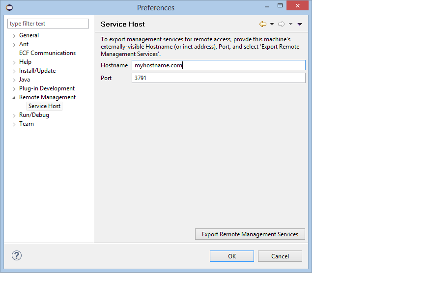
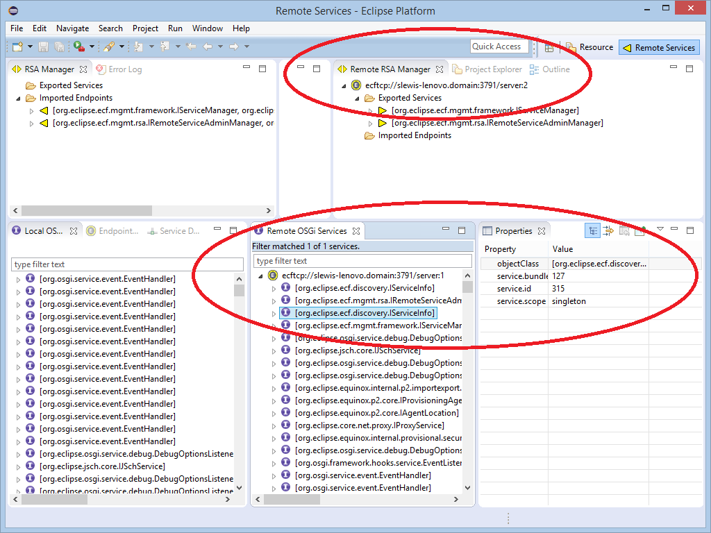
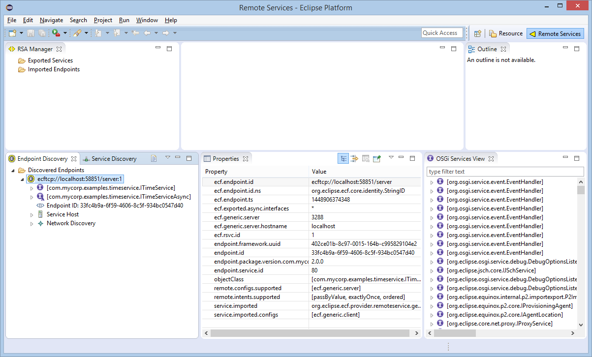
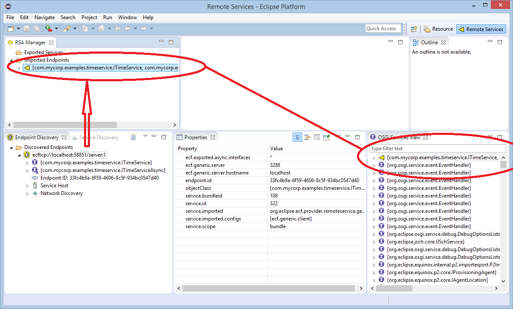

Eclipse Communication Framework (ECF)
Eclipse Communication Framework (ECF)
an eclipse runtime project
New and Noteworthy
3.12.1 Release
Return to ECF download page
New and Noteworthy for 3.11.0/Mars
New and Noteworthy for 3.12.0

|
Eclipse Communication Framework (ECF)
an eclipse runtime project New and Noteworthy 3.12.1 Release Return to ECF download page New and Noteworthy for 3.11.0/Mars New and Noteworthy for 3.12.0 |
|
|
Remote Management for OSGi Runtimes and Eclipse |
At the ECF Github organization, we've created OSGi Remote Services allow remote monitoring and management of any OSGi container (e.g. Eclipse, Equinox, Karaf, Concierge, others). The repository containing the service APIs, implementations, and tooling for Remote Management are here. Each management service is declared and implemented in separate bundles, so that only relevant services may be installed and used in appropriate environments. For example, if Karaf server environments the OSGi management services would be completely appropriate, and the Eclipse-specific services listed below would not be needed.
Each of the above services also has an async proxy service interface (e.g. IServiceManagerAsync), allowing the remote service to be accessed via a non-blockingasync proxy created automatically for the service by ECF's Remote Services implementation. Host implementations of each of these services are also available in corresponding host bundles. Also included in the OSGi Remote Management repository are Eclipse plugins to expose a running Eclipse as a host for remote management, or to use Eclipse views as a consumer to manage a remote host. For example, here is a new Eclipse Preferences user interface for exporting a Service Manager and an RSA Manager remote services:  Once exported, then on Eclipse consumers where the service can be discovered (e.g. on same LAN), a Remote OSGi Service view and a Remote RSA Manager views may be displayed, showing the remote host's currently Exported remote services (above) and the remote host's currently running OSGi services.  |
|
Enhanced Remote Services/Remote Service Admin Tooling |
In ECF 3.10.0/Mars a Remote Services Perspective was introduced. This perspective included an Endpoint Discovery View allowing endpoints to be discovered (via network discovery and/or xml/EDEF-file-based discovery), examined, and imported for use as a remote service.
In this release, there's a new Remote Service Admin (RSA) manager view. This view presents the Exported Services and Imported Endpoints for the RSA running within Eclipse, allowing the programmer to examine and manipulate exported services and imported endpoints. This tooling may be used to test and debug ECF Remote Services by monitoring and managing the remote services export, discovery, and import.
For example, here is a screenshot showing an endpoint that has been exported and published for by a remote host (e.g. by a Karaf-based host), and then discovered via the Zeroconf protocol (presented in the Endpoint Discovery View)
 The user can select this Discovered Endpoint, open the context menu, and select the 'Import Remote Service' menu. The selected Endpoint will then be imported, and the Imported Endpoint will appear in the RSA Manager view.
 Note that the imported endpoint (the remote service proxy) is also presented in the OSGi Services View, and the properties associated with the selected mported endpoint are presented in the properties view.
The Imported Endpoints presented in the RSA Manager view can be Unimported (again via context menu). As well, if remote service hosts are exported, they will appear under the Exported Services group in the RSA Manager, and can also be unexported via the RSA Manager context menu. |
|
Remote Services Distribution Provider API |
Remote Services distribution providers are responsible for implementing the remote method call...i.e. the serialization of parameters and return values, and the communications protocol used to communicate between the caller and the remote service. caller. ECF's Remote Services implementation allows the use of custom or alternative distribution providers. Allows ECF's Remote Services implementation to be used with any desired serialization mechanism and any suitable communications protocol. For easy creation of distribution providers, we've added a new IRemoteServiceDistributionProvider interface so that a distribution provider may be registered for use via the OSGi whiteboard pattern. Here is the org.eclipse.ecf.remoteservice.provider package. For example, here is a distribution provider implemented using Jersey Jax-RS REST framework. A single instance of this class is registered via Declarative Services and any remote services using the 'ecf.jaxrs.jersey.server' config type will use Jersey as the distribution mechanism. See the examples in the JaxRSProviders repo for complete examples of using this provider. |
|
New Distribution Providers and Distribution Provider documentation |
Using the remote services distribution provider API above, several new distribution providers have been created: |